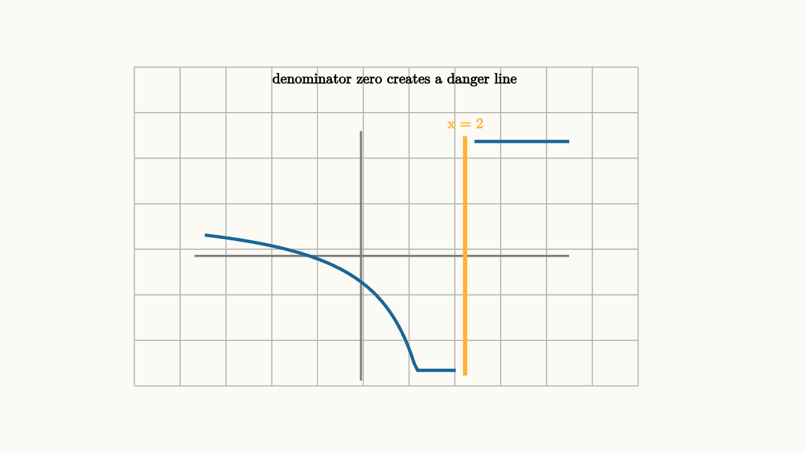

Rational Functions Have Visible Danger Zones
A rational function is a fraction of polynomials:
That definition looks harmless until the denominator approaches zero. Then the graph can shoot upward, plunge downward, or leave a missing point that a simplified formula hides. Rational functions are maps with danger zones, and the denominator marks the places to inspect first.
Consider
At $x=2$, the denominator is zero. The formula has no value there. As $x$ gets close to $2$, the denominator becomes a tiny positive or negative number, and dividing by it magnifies the output. That is the geometric source of a vertical asymptote.

source
background = [0.985, 0.98, 0.955, 1]
camera = Camera(4.8b)
let O = [-0.5, -0.35, 0]
let U = 0.62
let P = |x, y| [O[0] + U * x, O[1] + U * y, 0]
let f = |x| (x + 1) / (x - 2)
let Branch = |a, b| {
var pts = []
for (x in sample(a, b, 80)) {
pts .= P(x, clamp(-2.2, f(x), 2.2))
}
return stroke{BLUE, 3} Polyline(pts)
}
mesh diagram = block {
. stroke{LIGHT_GRAY, 1} LineGrid([-3.2, 2.8, 12], [-1.9, 1.9, 8], 1)
. stroke{GRAY, 2} Line(start: P(-3.2, 0), end: P(4, 0))
. stroke{GRAY, 2} Line(start: P(0, -2.4), end: P(0, 2.4))
. Branch(-3, 1.82)
. Branch(2.18, 4.0)
. stroke{ORANGE, 4} Line(start: P(2, -2.3), end: P(2, 2.3))
. center{P(2, 2.55)} color{ORANGE} Text("x = 2", 0.62)
. center{[-0.1, 1.75, 0]} color{BLACK} Text("denominator zero creates a danger line", 0.62)
}The first move with any rational function is to factor the denominator. The equation
identifies the excluded inputs. These values are outside the domain before any simplification begins.
It is worth saying this slowly because many errors begin here. The domain belongs to the original expression. If the original formula has a denominator, every zero of that denominator is forbidden. Simplifying later may make the formula look harmless at a forbidden value, but the original machine still broke there. A canceled factor removes a visible blow-up from the simplified graph. It does not erase the historical fact that the original expression had no value at that input.
Sometimes the danger leaves a vertical asymptote. Sometimes it leaves a hole. The difference comes from whether the numerator also has the same factor.
For example,
The denominator is zero at $x=1$ and $x=3$. Both values are excluded from the original formula. The factor $x-1$ cancels algebraically for all allowed $x$:
The simplified expression still has a vertical asymptote at $x=3$. At $x=1$, the simplified expression would give
but the original formula never allowed $x=1$. So the graph has a missing point at $\left(1,-\frac32\right)$.
source
background = [0.985, 0.98, 0.955, 1]
camera = Camera(4.8b)
let Card = |txt, pos, col| block {
. center{pos} fill{alpha{0.13} col} stroke{col, 2.5} Rect([1.45, 0.58])
. center{pos} color{BLACK} Text(txt, 0.62)
}
let Fraction = |cancel| block {
. Card("x - 1", [-1.1, 0.55, 0], if (cancel) { LIGHT_GRAY } else { BLUE })
. Card("x + 2", [0.65, 0.55, 0], BLUE)
. stroke{BLACK, 3} Line(start: [-2.0, 0.05, 0], end: [1.55, 0.05, 0])
. Card("x - 1", [-1.1, -0.48, 0], if (cancel) { LIGHT_GRAY } else { ORANGE })
. Card("x - 3", [0.65, -0.48, 0], ORANGE)
if (cancel) {
. stroke{RED, 4} Line(start: [-1.75, -0.78, 0], end: [-0.45, 0.85, 0])
. center{[-1.1, -1.25, 0]} color{RED} Text("hole remains at x = 1", 0.62)
}
}
"excluded values"
mesh frac = Fraction(cancel: 0)
mesh note = center{[0, 1.45, 0]} color{BLACK} Text("factor before simplifying", 0.66)
play Write(0.8)
"cancel shared factor"
frac = Fraction(cancel: 1)
note = center{[0, 1.45, 0]} color{BLACK} Text("canceling changes the formula; the original domain stays recorded", 0.62)
play [Trans(1.0, [&frac]), Trans(0.7, [¬e])]
"two dangers"
frac = block {
. center{[-1.25, 0.25, 0]} fill{alpha{0.14} RED} stroke{RED, 2.5} Circle(0.38)
. center{[-1.25, 0.25, 0]} color{BLACK} Text("hole", 0.62)
. center{[1.1, 0.25, 0]} fill{alpha{0.14} ORANGE} stroke{ORANGE, 2.5} Rect([1.35, 0.76])
. center{[1.1, 0.25, 0]} color{BLACK} Text("asymptote", 0.62)
}
note = center{[0, 1.35, 0]} color{BLACK} Text("x = 1 is missing, x = 3 blows up", 0.62)
play [Trans(1.0, [&frac]), Trans(0.7, [¬e])]There is a second long-range question. What happens when $x$ is very large? In
the leading terms dominate. The ratio behaves like $x/x$, so the graph settles near $1$. In symbols,
The leftover term $\frac{3}{x-2}$ gets small far from the danger line. That is why the horizontal asymptote is $y=1$.
When the numerator degree is lower than the denominator degree, the ratio settles near $0$. When the degrees match, the ratio settles near the ratio of leading coefficients. When the numerator degree is one higher, polynomial division reveals a slant asymptote.
The useful classroom routine is:
1. Factor numerator and denominator. 2. Mark denominator zeros as excluded inputs. 3. Cancel shared factors only after recording the exclusions. 4. Interpret canceled exclusions as holes. 5. Interpret uncanceled denominator zeros as vertical asymptotes. 6. Use leading terms or division for far-away behavior.
Rational functions reward this order because every feature has a source. A vertical asymptote is a denominator zero that survived. A hole is a denominator zero hidden by cancellation. A horizontal or slant asymptote is the large-scale ratio of the two polynomials. The graph looks dramatic, but the drama is organized by factors.
Let's use the routine on a second example:
Factor both pieces:
The original denominator vanishes at $x=3$ and $x=-2$, so both are excluded. The factor $x-3$ cancels for allowed inputs:
The value $x=3$ becomes a hole. Its missing height is read from the simplified expression:
The value $x=-2$ remains a vertical asymptote. The far-away behavior is controlled by the leading terms, so the graph approaches $y=1$.
This single example contains the whole mental map. The roots of the denominator tell where to be careful. Shared roots produce removable gaps. Unshared roots produce blow-ups. Leading terms describe the horizon.
Rational equations use the same caution. If
then multiplying both sides by $x-2$ is allowed only with the standing condition $x\ne 2$. The equation becomes
so $x=\frac72$. This candidate is allowed because it is not $2$. If a candidate lands on an excluded value, it must be discarded. Rational algebra and rational graphing are the same story: keep track of where the denominator made the original statement undefined.